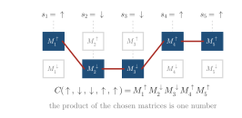
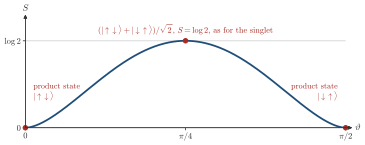

Advanced Quantum Materials 2027 · All lectures · Lecture notes
Session 7. Quantum Many-Body Entanglement and Tensor Networks
7.4 The matrix product state ansatz
The idea that solves this problem is very simple. Instead of storing \(C(s_1,\dots,s_L)\) as one large array of \(2^L\) numbers, we write it as a product of matrices, with one matrix for each possible value of each local spin.
\[C(s_1,s_2,\dots,s_L) \;\approx\; M^{s_1}_{1}\, M^{s_2}_{2}\, \cdots\, M^{s_L}_{L}, \tag{7.5}\]
Here each \(M^{s_i}_i\) is an \(M\times M\) matrix, except at the two ends of a finite open chain where it is a vector, and \(M\) is the bond dimension, which is a free parameter that we choose. For a spin-1/2 chain there are two matrices per site, one for \(s_i=\uparrow\) and one for \(s_i=\downarrow\). Therefore the total number of parameters of the state is proportional to \(L\times M^2\), which is linear in the system size, in strong contrast with the \(2^L\) of the exact representation (7.4). This is called the matrix product state (MPS) ansatz. At first sight, it is only a choice, and one that looks rather arbitrary. In Sections 7.5 to 7.8 we will answer two questions about it. First, why it is a good choice. Second, what exactly it captures, and what it does not capture, about the physical state.
Let us read the product (7.5) for one configuration of the spins. Each site holds two matrices, and the value of the spin on that site selects one of them. The chosen matrices are multiplied in order, and the result is the coefficient \(C\) of that configuration, as Schematic 7.3 shows.


A spin-1/2 chain has \(L=100\) sites, and we use an MPS with \(M=10\). How many numbers does (7.5) store, roughly?
Show the answers
- A. ✗ False
This is false. The number \(2^{100}\approx1.3\times10^{30}\) is the number of coefficients of the exact state. The MPS exists to avoid exactly this number, and it stores \(2LM^2=2\times10^4\) numbers.
- B. ✓ True
This is true. In (7.5) each site has two matrices, one for each spin value, and each matrix has \(M^2=100\) entries. The total grows as \(LM^2\), so doubling the chain only doubles the storage.
- C. ✗ False
This is false. Even the product state, which is the case \(M=1\), needs two numbers per site, so \(200\) for 100 sites. An MPS with \(M=10\) has \(10\times10\) matrices on each site and needs more.
We should know from the start that this is not a toy model. Today matrix product states give the most accurate results for two of the central hard problems in quantum materials. The first one is the doped two-dimensional Hubbard model with second-neighbor hopping, which is related to unconventional superconductivity. The second one is the two-dimensional frustrated Heisenberg model on the triangular and kagome lattices, and this is where the strongest numerical evidence for real quantum spin liquid physics comes from, which is the herbertsmithite example of session 6. Both examples are shown as labeled figure panels on slide 15 of the deck, with the titles “Solving the 2D Hubbard model at finite doping” and “Solving the 2D Heisenberg model in frustrated lattices.” This shows that MPS are a working tool for the strongly correlated regime, and not only a formal construction.
7.5 Measuring entanglement with the entanglement entropy
To see why (7.5) works, we need a quantitative measure of how entangled a many-body state is. Let us split the system into two complementary parts, subsystem \(A\) and subsystem \(B\). A state is not entangled, which is also called a product state, if it can be written as \(|\Psi\rangle = |\psi_A\rangle \otimes |\psi_B\rangle\). Two examples are the state \(|{\uparrow\downarrow}\rangle\) and a product of two single-site states that are both polarized along \(x\). The singlet (7.3) is the opposite case. It cannot be written as a product of this form, and it is our main example of an entangled state.
To turn the question “entangled or not” into a number, we define the full density matrix \(\rho = |\Psi\rangle \langle\Psi|\), and we trace out subsystem \(B\). This gives the reduced density matrix of \(A\), \(\rho_A = \mathrm{Tr}_B\,\rho\). The entanglement entropy is then the von Neumann entropy of \(\rho_A\),
\[S(\rho_A) = -\,\mathrm{Tr}\!\left(\rho_A \log \rho_A\right). \tag{7.6}\]
If \(|\Psi\rangle\) is a product state, \(\rho_A = |\psi_A\rangle\langle\psi_A|\) is a projector of rank one, so its only nonzero eigenvalue is \(1\), and we directly get \(S=0\). This means that there is no entanglement and the entropy is zero, which is what we expect.
Let us now check (7.6) on the singlet (7.3). We write \(\rho = |\Psi\rangle\langle\Psi|\) in the product basis and trace over site \(1\), which is our subsystem \(B\), and we obtain
\[\rho_A = \tfrac{1}{2}\,|{\uparrow}\rangle\langle{\uparrow}| + \tfrac{1}{2}\, |{\downarrow}\rangle\langle{\downarrow}|,\]
which is a maximally mixed single-site density matrix, with two eigenvalues both equal to \(1/2\). Then
\[S = -\left(\tfrac12\log\tfrac12 + \tfrac12\log\tfrac12\right) = \log 2. \tag{7.7}\]
This is the maximum entanglement entropy that a single spin-1/2 can have, since a local Hilbert space of dimension \(d\) can have at most \(\log d\). This is the meaning of the statement that the singlet is “maximally entangled,” since it uses all the capacity of the local Hilbert space for entanglement.
Let us see how the entropy depends on the state. We take \(\cos\vartheta\,|{\uparrow\downarrow}\rangle+\sin\vartheta\,|{\downarrow\uparrow}\rangle\), which is a product state for \(\vartheta=0\) and has the weights of the singlet for \(\vartheta=\pi/4\). The reduced density matrix has the eigenvalues \(\cos^2\vartheta\) and \(\sin^2\vartheta\), and Schematic 7.4 shows the entropy (7.6) that follows from them.

The spin state \((|{\uparrow\downarrow}\rangle+|{\downarrow\uparrow}\rangle)/\sqrt2\) differs from the singlet (7.3) only by a sign. What is the entanglement entropy of one site?
Show the answers
- A. ✗ False
This is false. A product \((a|{\uparrow}\rangle+b|{\downarrow}\rangle)(c|{\uparrow}\rangle+d|{\downarrow}\rangle)\) with \(ac=0\) and \(bd=0\) cannot have both \(ad\) and \(bc\) nonzero. So the state is not a product and its entropy is not zero.
- B. ✗ False
This is false. One spin-1/2 has two states, so the entropy of one site cannot exceed \(\log 2\). The value \(2\log2\) would need four states on the site.
- C. ✓ True
This is true. Tracing out one site gives \(\tfrac12|{\uparrow}\rangle\langle{\uparrow}|+\tfrac12|{\downarrow}\rangle\langle{\downarrow}|\), because the cross terms have a different second spin and drop out. The entropy depends on the weights of the two terms and not on their relative sign.
Try it. Compute the time of the ground-state calculation for the sizes of Ns, with sc.maxm = 20. The time should grow roughly linearly with the number of sites. Then raise sc.maxm to 40 and check that each time is longer but the curve stays straight, which is the \(LM^2\) structure of (7.5).